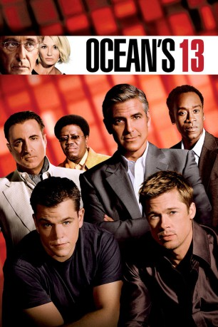

#827 Ocean's Thirteen
Alternativ: Ocean's Thirteen
 
 IMDB-Wertung: 6.9 / 10
IMDB-Wertung: 6.9 / 10  Metascore: 62
Metascore: 62 
Nachdem Reuben Tishkoff beim Bau eines neuen Casinos von seinem Geschäftspartner Willy Banks übers Ohr gehauen wurde, landet er mit einem Herzanfall im Krankenhaus. Danny Ocean will die Sache für seinen alten Freund regeln und bietet Banks ein faires Geschäft an. Banks lehnt das Angebot kommentarlos ab und so beginnen Danny und seine Freunde mit der Planung des Rachefeldzugs: In Zusammenarbeit mit ihrem alten Erzfeind Terry Benedict wollen sie Banks neues Casino in der Eröffnungsnacht leer räumen.
Jahr: 2007
Dauer: 122 Minuten
FSK: 0
Land: USA Studio: Warner Bros.Tonspuren: DD5.1 - ,
Untertitel: Deutsch, Englisch,
Auflösung: 1080p (1920x800) Größe: 10240 MB
Genre: Krimi, Thriller
Regisseur:  Steven Soderbergh
Steven Soderbergh
Drehbuch: Brian Koppelman, David Levien, George Clayton Johnson, Jack Golden Russell
Soundtrack: David Holmes
Darsteller:
Datei: X:\5-Pentalogie(A-Z)\Oceans 11-12-13\Ocean's Thirteen (2007, FSKo.Al., 1920x800).mkv seit 30.03.2015
Festplatte: HD Collection-3(N-Z)-6(A-Z)
 Es gibt insgesamt 8 Filme in der Gruppe '5-Pentalogie(A-Z)\Oceans 11-12-13'
Es gibt insgesamt 8 Filme in der Gruppe '5-Pentalogie(A-Z)\Oceans 11-12-13'